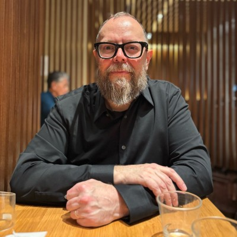

Japan
Eight years
Doraemon everywhere. My first character understood as a shape, not a story.
Doraemon — a shape before a story
From a blue robot cat in Japan to leading AI research at an aircraft company. Scroll.
Japan
Doraemon everywhere. My first character understood as a shape, not a story.
Doraemon — a shape before a story
1991
The T-1000 moved through space. I started thinking in the z-axis.
The T-1000 — depth I couldn't draw
1994 — 98
BFA, Timed Arts. Toy Story landed in my second year and confirmed the bet.
1998
Summer internship. Modeled, rigged and animated a music video. First time my own work moved.
1999 — 2006
The First Easter and The Prince of Peace, both nationally broadcast. 300+ characters. Flew to Bulgaria to fix the renderer. Then the projects stopped landing and the studio closed.
Posters reimagined, 2026 — the films took two years each
2006 — 09
Whatever existed, 3D or 2D. Architectural renders, an MMO, Flash games.
2009 — 11
Nintendo DS, so very 2D. Adapted You Don't Know Jack with Jellyvision, consulting with their creative director.
The game that introduced me to Jellyvision
2011
He remembered me, and Jellyvision needed hands.

Allard Laban · Creative Director2011 — 2020
Contract-to-hire — the only one; everyone else came in full-time. Nine years animating the moments inside health-benefit enrollment. 18 million employees, 114 of the Fortune 500.
 Amanda Lannert · CEO
Amanda Lannert · CEO
2020
Jellyvision let me go after nine years. Erik and I contracted for Jackbox and Jellyvision at the same time — out of work together, working anyway.
2020 — 23
The Mythicraft reel has passed 9.4 million views — in under three years. 100+ thumbnail cards. Put Erik's name forward — colleagues a third time.
Mythicraft — 9.4 million views
 Jamie May · Head of Design
Jamie May · Head of Design
2024 — 25
Took a job to pay the bills. Ninety percent sales. But I started pushing renders through AI and running clients through VR — and that turned out to be the thing.
2025 — now
Senior Learning Experience Design, leading AI research and development. Work I actually love, with a manager worth naming.
Ryan Garner · Manager